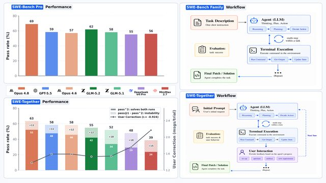
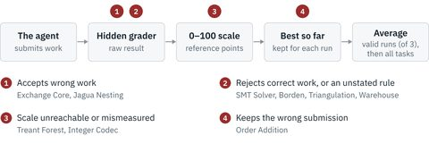
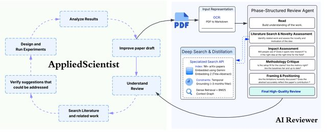
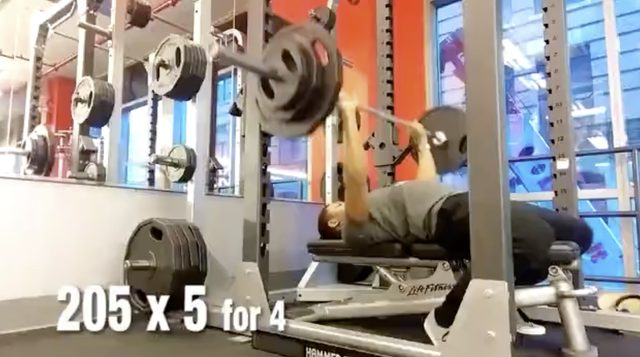
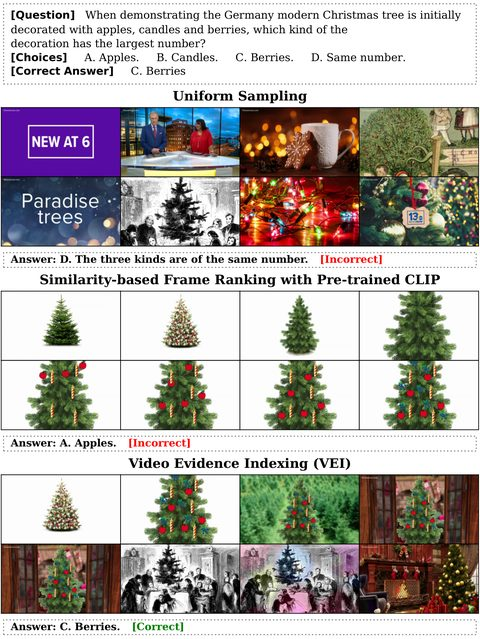
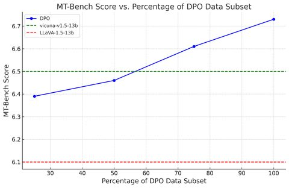
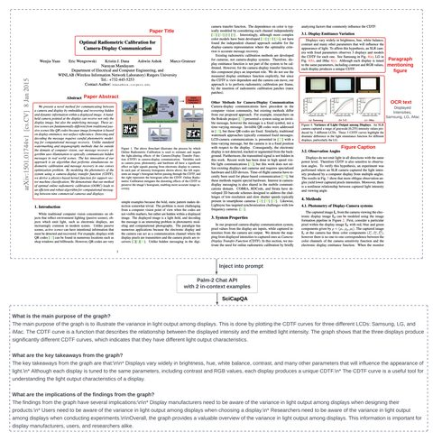

Shengzhi (Alex) Li
Research Engineer · Muse Post-Training · Meta Superintelligence Labs
I work on post-training for Muse at Meta. Before that I helped post-train the Reka Flash models at Reka AI.
I took the long way here: physics and applied math at Berkeley, four years building wearable neurostimulation for tremor at Cala Health (three patents, a therapy now covered by Medicare), LLMs for finance at TIFIN, and then frontier models. Lately I spend most of my time on coding agents and on whether the numbers we use to judge them can be trusted.
News
- Oct 2026 Released EdgeBench Verified, an audit of the graders behind EdgeBench.
- Sep 2026 AppliedScientist is on arXiv.
- Jun 2026 SWE-Together is out and accepted to an ICLR 2026 workshop.
- Apr 2026 Muse Spark, the first Muse model, launched in Meta AI.
- Jun 2025 Joined Meta.
Earlier
- 2025 Released Reka Flash 3 and Reka Flash 3.1 at Reka AI.
- 2025 Top Reviewer, ICLR 2025.
- 2024 Top Reviewer, NeurIPS 2024.
- Aug 2024 Multi-modal preference alignment paper at ACL 2024 (main).
- Aug 2024 Joined Reka AI.
- Aug 2024 Invited talk at the 27th Mars Society Convention.
- Aug 2023 Released the SciGraphQA dataset.
- 2023 Co-organized the Rare Disease AI Hackathon at Stanford School of Medicine.
Models
Models I contributed to as part of the post-training team.
-
Muse
Meta, 2026– Meta Superintelligence Labs' multimodal reasoning models, starting with Muse Spark. meta.ai
- Reka Flash 3 & 3.1
Research
* equal contribution or project co-lead. Full list on Google Scholar.
Agents & evaluation
-

SWE-Together: Evaluating Coding Agents in Interactive User SessionsReal users don't hand an agent a perfect spec; they clarify, change their minds and correct it. We rebuilt 109 tasks from 11,260 real coding sessions and replay them with a simulated user, scoring agents on whether they finish and on how often the user has to step in.
-

EdgeBench Verified: An Audit of the Graders Behind the 51 Public EdgeBench TasksA benchmark is only as good as its grader. I tested every hidden grader in EdgeBench the way you would test any program. 32 of 51 score some submissions wrongly: correct work gets zero, broken work gets full marks. Fixes for 31 tasks are public.
AI for science
-

AppliedScientist: Automated Scientific Revision Through Iterative AI ReviewingAn AI scientist revises rejected papers while an AI reviewer keeps grading them. It fixes 85% of the experimental weaknesses but almost none of the weaknesses in the idea itself.
-
Ask?IntelliAsk: Learning to Ask High-Quality Research Questions via RLVR
RL with a reward model trained on real ICLR review questions, so the model asks the questions a good reviewer would.
-
A→ZAbstract2Appendix: Academic Reviews Enhance LLM Long-Context Capabilities
Peer reviews make good training data for reading whole papers, appendix included.
Multimodal models
-

PushupBench: Your VLM is not good at counting pushupsVLMs can tell you what exercise you're doing but not how many reps. Counting turns out to be a good probe of temporal reasoning. (Pictured: a clip that prints the answer on screen. We edit those out.)
-

Video Evidence Indexing: Learning Where to Look from Video Previews for Token-Budgeted Long-Video Question AnsweringWatch a cheap low-resolution preview first, then spend the high-resolution frame budget only where the answer is.
-

Multi-modal Preference Alignment Remedies Degradation of Visual Instruction Tuning on Language ModelsTeaching a language model to see makes it worse at language. A small round of DPO wins most of it back.
-

SciGraphQA: A Large-Scale Synthetic Multi-Turn Question-Answering Dataset for Scientific Graphs295K multi-turn conversations about figures in arXiv papers, generated with the paper's own text as context.
Also
- Wavelet Guided Visual State Space Model and Patch Resampling Enhanced U-shaped Structure for Skin Lesion Segmentation. Shuangxi Feng, Xianglin Chen, Shengzhi Li. IEEE Access 2024.
Projects
- AI Scientist v3 — an autonomous research agent written as skills, not orchestration code.
- agentsmd-rl — RL environments built from repos that ship agent instruction files.
- TimeseriesContrastiveModels — contrastive learning models for time series, in one place.
- Datasets on Hugging Face — SciGraphQA, Abstract2Appendix, mllm-dpo, and more.
Experience
- MetaResearch Engineer, Muse Post-Training2025–
- Reka AIMember of Technical Staff, Post-Training2024–25
- TIFINStaff LLM Data Scientist2023–24
- Cala HealthData Scientist · 3 patents on wearable neurostimulation2019–23
- Zeesan BiotechData Scientist2018–19
Education
- Westcliff UniversityM.S. Computer Science, summa cum laude2022
- Stanford UniversityGraduate Certificate in AI2021
- UC BerkeleyB.A. Applied Mathematics & B.A. Physics2018
Service & Talks
- Top Reviewer: NeurIPS 2024, ICLR 2025.
- Reviewer: NeurIPS, ICLR, ICML, AISTATS, TMLR, IEEE SSCI; Neural Networks, CVIU, IEEE T-IV, and other journals.
- Talks: Mars Society Convention (2024), Democratize.AI (2024), International Tremor Congress (2023).
Patents
- Parameter variations in neural stimulation — WO2023015159A3
- Personalized therapy neuromodulation systems — WO2023283568A1
- Wearable neurostimulation system — AU2022324555A1